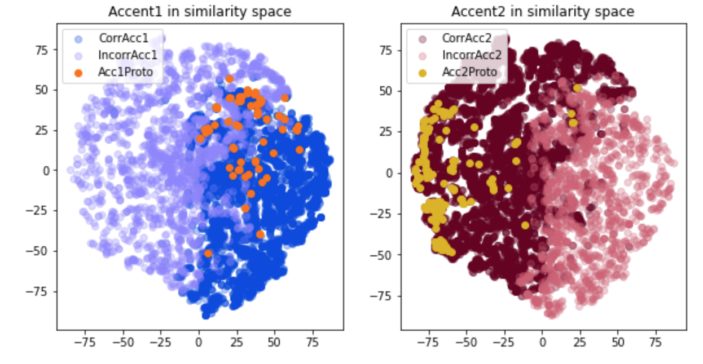
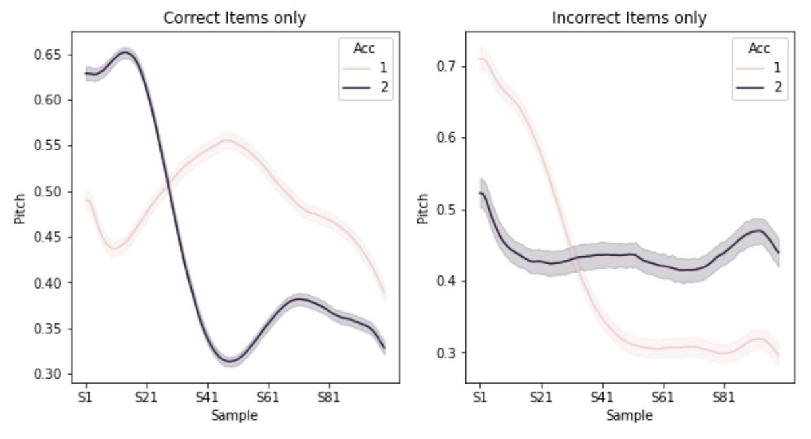
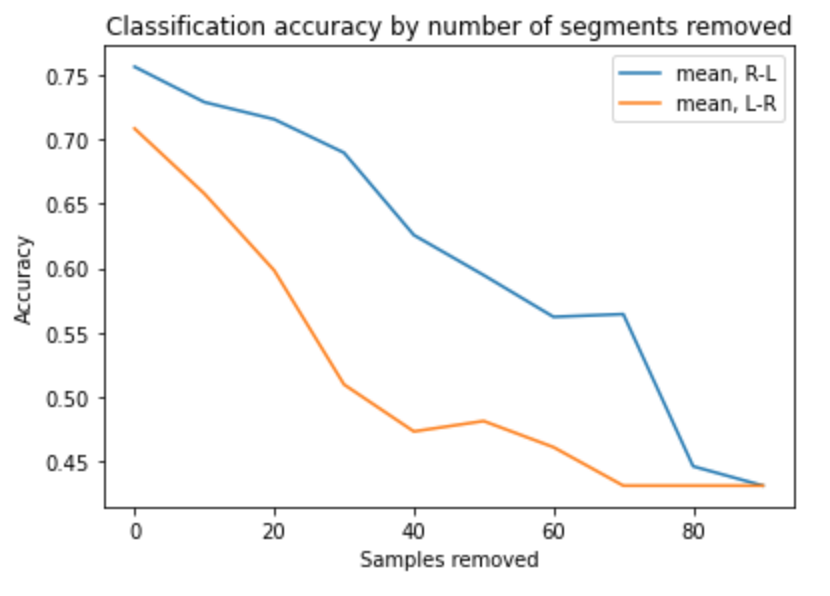

Identifying prosodic patterns in a speech corpus with LSTM deep networks: Swedish tonal accent as an example
Code (Jupyter notebooks to extract training data and train an LSTM): Github

Figure 1. Swedish accent patterns in LSTM similarity space (after PCA/t-sne dimensionality reduction).
The problem
Swedish has two tonal (pitch) accent patterns – Accent 1, which is characterized (in disyllabic words) by a single peak, and Accent 2 which is characterized by two peaks. Swedish speakers can use these prosodic patterns in word recognition, e.g. mentally anticipate the next syllable (Althaus et al., 2021) The theory underlying the question of which word is assigned which accent pattern has been controversial (Riad, 2014). However, it is also the case that the pitch patterns are clearest in stressed position in a sentence or isolation forms, with defocused words showing less prominent differences (although they can still be discriminated in lab-based recordings). The aim of this project is to assess the distribution of Accent 1 and 2 in spoken Stockholm Swedish, i.e. asking to what extent speakers (a) produce identifyable Accent 1/2 patterns, and (b) are consistent with the theoretically expected patterns.The project
To obtain training data, I extracted the pitch contours of disyllabic nouns from a corpus of spoken Swedish and trained an LSTM deep neural network to assign them to either Accent 1 or Accent 2. The strength of LSTMs is to learn sequential information, and they should therefore be suitable for a task that essentially involves detecting the number of peaks in a temporal pattern.If Swedish speakers produce typical Accent 1 / 2 patterns consistently, and according to the theoretically expected accent assignment rules, an LSTM classifier should reach a high level of accuracy. Any errors should provide insight into where patterns deviate from the expectation. I extracted approx. 120,000 utterances of disyllabic nouns from the NST corpus of spoken Swedish, of which about 19,000 were from Stockholm Swedish speakers and were therefore included in the final training data. This involved locating disyllabic nouns in the transcripts, and then using automatic speech recognition (from KTH's Speech, Music \& Hearing Division) to find corresponding token boundaries in the audio recordings and cutting the wav files. I then used praat to extract f0 contours, normalise pitch (to between 0 and 1) and length (100 samples). The final pre-processing step (adapted from Nencheva et al. 2020) involved selecting the 30 most interesting points (largest slope changes) and interpolating between them, as well as smoothing. Finally I trained LSTM neural networks (using tensorflow) to categorise patterns into Accent 1 vs. Accent 2, using the lexically assigned accent as training labels. The best-performing model with similar training and test accuracy was obtained with 120 hidden units and 400 epochs of training.
Results
The best model's overall accuracy was 80%, meaning that 4/5 of the tokens extracted from the NST corpus had clear enough contour patterns to assign to either Acc1 or Acc2. For the remainder, further analysis is needed to determine whether these are (a) mispronunciations (e.g. items that should be Accent 1 but sound like Accent 2 and vice versa), (b) “neutral” contours that don’t have any of the features of either Accent 1 or 2, or (c) low quality recordings / sound file issues.We can use tsne to visualise the LSTM layer activations for each input pattern to get some insight into the similarity space learnt by the network (Figure 1). As Figure 1 shows, the "correct" Accent1 and Accent2 pattern are clearly separated in the similarity space. However, errors are scattered throughout the space, too, indicating that they are not just ‘outlier’ patterns that group together (as we might expect if errors only occurred for poor recordings where reliable pitch extraction was not possible).
Figure 1 also shows the projections into the LSTM's similarity space of a set of “prototypical” Accent1 and Accent2 recordings that were made for a psycholinguistic study by a native speaker (Althaus et al.,2021). As can be seen in the right graph, the Accent 2 prototypes cluster at the far edge of the similarity space within the "Accent 2 region", i.e. as far away as is possible from Accent 1 patterns. By contrast, Accent 1 prototypes (shown in the left graph) are found in a region that is at the border between Accent1 and Accent 2, and contains both correctly and incorrectly classified Accent 1 and 2 patterns. It appears that the 1-peak (rise, then fall) pattern we think of as prototypical in fact occurs many times as the realisation of an Accent 2 item (presumably in a de-focused position). Interestingly though, there are many realisations of Accent 1 that – although they have a different shape – the model has learnt to associate reliably with Accent 1.

Figure 2. Average pitch contours of correctly (left) and incorrectly (right) classified input patterns.
Figure 2 shows average contours for correctly classified patterns (left) and incorrectly classified patterns (right). The "correct" plot clearly shows the 1-peak vs. 2-peak structure for Accent1/2 respectively. While the erroneous Accent 1 patterns (i.e. classified as Accent 2) seem to be coined by a falling pitch in the first half, the Accent 2 errors seem to display an overall flat pitch structure.
How does the model decide whether a pattern is Accent 1 or 2?
Human listeners can correctly distinguish between forms like 'buller' ('noise', Acc1) and 'bulle' ('bun', Acc2) after hearing just the first syllable 'bul-', i.e. at a time when only the pitch pattern differentiates the words. Can the model do this too? In the set of input patterns, we can systematically replace parts of the signal by the overall mean pitch for the relevant time slot in order to test how model accuracy decreases for such degraded inputs. I incrementally (10 segments per step) replaced segments (a) beginning at the left edge (LR) and (b) beginning at the right edge (RL), and logged classification accuracy, shown in Figure 3.
Figure 3. Accuracy for degraded input patterns, with segments replaced at the left or right edge.
As Figure 3 shows, accuracy falls off more steeply when replacing segments from the left edge compared to the right edge, suggesting that the first part of the pitch pattern is more relevant to classification.
References:
Althaus, N., Wetterlin, A., & Lahiri, A. (2021). Features of low functional load in mono- and bilinguals’ lexical access: Evidence from Swedish tonal accent. Phonetica, 78(3), 175–199. https://doi.org/10.1515/phon-2021-2002
Nencheva, M. L., Piazza, E. A., & Lew-Williams, C. (2021). The moment-to-moment pitch dynamics of child-directed speech shape toddlers’ attention and learning. Developmental Science, 24(1), 1–15. https://doi.org/10.1111/desc.12997
Riad, Tomas (2014). The phonology of Swedish. Oxford: Oxford University Press.